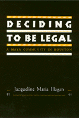

Understanding the process of becoming legal from the perspective of an immigrant community
Understanding the process of becoming legal from the perspective of an immigrant community


 Understanding the process of becoming legal from the perspective of an immigrant community
Understanding the process of becoming legal from the perspective of an immigrant community

|  |
Deciding to be LegalA Maya Community in HoustonJacqueline Maria Haganpaper EAN: 978-1-56639-257-0 (ISBN: 1-56639-257-8) |
To study the settlement process of undocumented migrants, Jacqueline Hagan examines one of Houston's Maya communities, the approximately 900 Maya from a township in the Department of Totonicapan, Guatemala. She traces this Maya community from its genesis in 1978, when a few men left the township in search of economic opportunity, to the complex effects of the 1986 Immigration Reform and Control Act (IRCA). Based on several years of living and participating in the Totonicapan Maya community in Houston and a visit to the Guatemalan home community, Hagan's research combines interviews, community participation, and observation to evaluate immigration policy.
Hagan shows that these immigrants do not passively accept U.S. immigration policy, but instead interpret it and base their actions on their own agenda within the context of their local community. The results, often quite unexpected by national policy makers, question popular myths about the settlement of immigrant communities. The author discusses the different settlement experiences of men and women and the effects of IRCA on family and community structure. Analyzing how legal status influences settlement behavior and international networks, she finds that strong community-based networks and social ties with a home community lead to successful adaptation.
"This book makes an important contribution to the debate over immigration. It is theoretically sophisticated, particularly in its analysis of immigration and legalization as processes rather than definitive decisions, in its recognition that immigrants vary in the cultural and social capital that they bring, and in making clear that immigration means different things for men and for women. The empirical research is unusually rich since it is based on three years of intensive field work in which Hagan followed closely the decisions that her informants made with respect to staying or returning and taking advantage of the legalization provisions of the Immigration Reform and Control Act. The result is a fascinating account of how Maya Indians from Guatemala have adjusted to life in the post-industrial world of Houston. As one of the best urban ethnographies that I have read in a long time, it is essential reading not just for specialists in immigration but for anyone interested in how ethnicity is constructed in urban settings, in the formation of transnational communities, and in the study of the family as both resource and constraint among the urban poor."
—Bryan R. Roberts, Population Research Center, University of Texas at Austin
"Hagan's study is a welcome addition to the small but growing literature on the contemporary Maya diaspora."
—Geographical Review
Tables
Preface and Acknowledgments
Part I: Building a Community Structure in Houston
1. Introduction
2. Community of Origin and the Transfer of Cultural Resources
3. The Settlement Process
Part II: The Journey through Legalization
4. The Social Process of Becoming Legal
5. Life after Legalization
6. Conclusion
Notes
Bibliography
Index
 | Jacqueline Maria Hagan is Assistant Professor of Sociology at the University of Houston. |
Sociology
Latin American/Caribbean Studies
Immigration Studies
© 2015 Temple University. All Rights Reserved. This page: http://www.temple.edu/tempress/titles/892_reg.html.